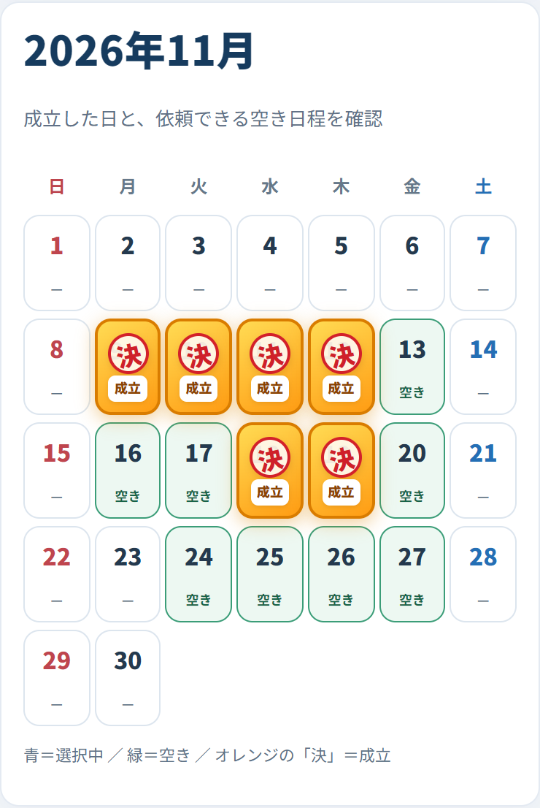
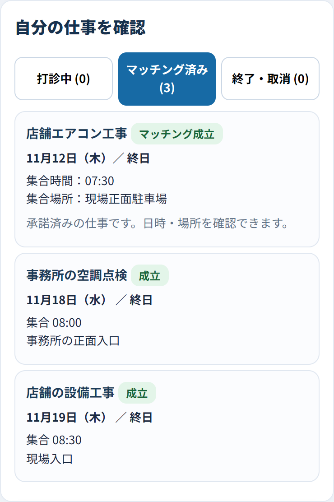

AIシステム開発
AI SYSTEMS
AIを活用した業務支援や自動化の仕組みを企画・開発。目的に合う使い方を検討し、実装と検証を重ねます。
業務支援 / 自動化 / 試作・検証AI & SYSTEM DEVELOPMENT
AIとテクノロジーで、
ビジネスの可能性を広げる。
ORXELIAは、AIを活用したシステム・
Webアプリケーションの企画、設計、開発に取り組みます。
01 — SERVICES
現場の課題を出発点に、必要な機能を見極める。
小さくつくり、確かめながら、育てていきます。
AI SYSTEMS
AIを活用した業務支援や自動化の仕組みを企画・開発。目的に合う使い方を検討し、実装と検証を重ねます。
業務支援 / 自動化 / 試作・検証WEB APPLICATIONS
業務管理ツールやWebサービスを設計・開発。日々の使いやすさと、必要な情報に迷わずたどり着ける構成を大切にします。
業務管理 / Webサービス / UI設計OUR PRODUCTS
身近な不便や現場の課題から、独自のプロダクトを企画。開発から実際の運用・検証まで取り組んでいます。
課題発見 / プロダクト企画 / 改善現在は自社プロダクトの開発・検証を中心に活動しています。個別の開発相談は、内容・対応可否を確認のうえご案内します。
02 — PRODUCTS
取り組みを、具体的なプロダクトで。
現在の開発・検証状況とともにご紹介します。
空きを、仕事につなぐ。
手配から、人工管理まで。
頼みたい仕事はあるのに、誰が空いているか分からない。職人には空きがあるのに、依頼が届かない。Partner Linkは、このすれ違いによる仕事の機会損失を減らすための業務システムです。
連絡を増やすだけでは、見えない空きは埋まりません。空き状況の共有から打診・成立までをつなぎ、手配のすれ違いを減らします。
人工管理では、管理者が確認した実働を記録・集計できます。現在は運用・検証中です。提供条件・料金は製品ページをご確認ください。
管理者用「決」と「空き」で手配状況がひと目で分かる

職人用自分の確定した仕事・日時・集合場所が分かる

03 — OUR APPROACH
技術のための開発ではなく、課題のための開発を。
使う人の視点から、ひとつずつ確かめます。
現場の不便や業務の流れを整理し、解決すべき課題を明確にします。
必要な機能を絞り、使える試作品として設計・開発します。
動作と運用を検証し、使い方や課題に合わせて改善を重ねます。
04 — ABOUT ORXELIA
ORXELIA（オルクセリア）は、AIとテクノロジーを活用したシステム開発に取り組むブランドです。
日々の不便や、まだ満たされていないニーズを見つけ、使いやすい仕組みへ。自社プロダクトの企画・開発と検証を通じて、アイデアを実際に動く形にしていきます。
常に最善を探求し、
数字で判断し、成果で証明する。
Seek Excellence. Decide with Data. Prove with Results.
LET’S BUILD WHAT’S NEXT
INFORMATION